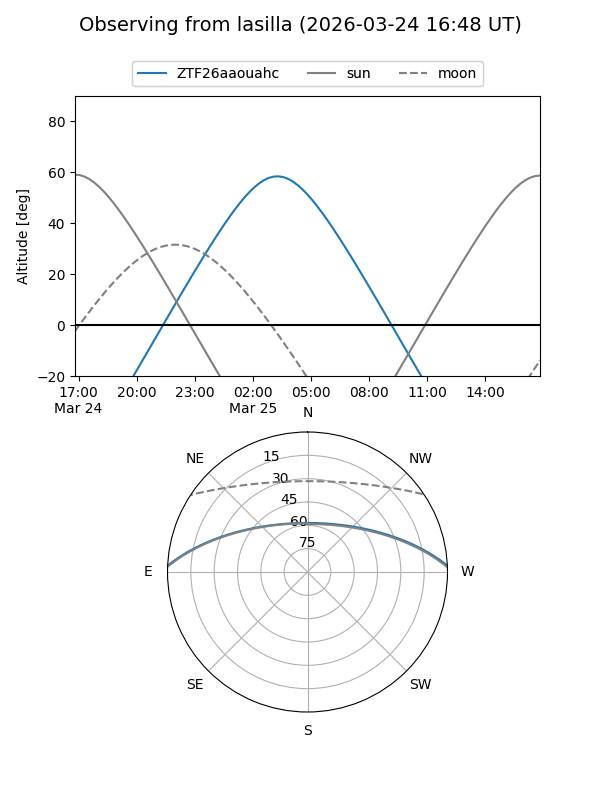
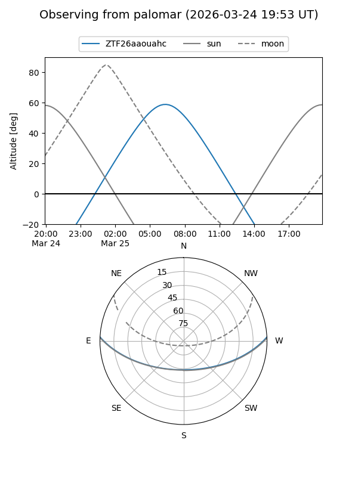

ZTF26aaouahc
Target ZTF26aaouahc at 2026-03-25 07:52
Aliases and brokers:
FINK: link
Lasair: link
ALeRCE: link
alt names
ZTF26aaouahc (ztf,fink_ztf)
Coordinates:
equatorial (ra, dec) = 160.3759,+2.43103
equatorial (HMS+DMS) = 10:41:30.21,+02:25:51.72
galactic (l, b) = (245.7883,+50.30102)
Flags:
Photometry:
last ztfg=16.90, ztfr=16.27
1 ztfg, 1 ztfr detections
Lightcurve
Visibility


Additional plots